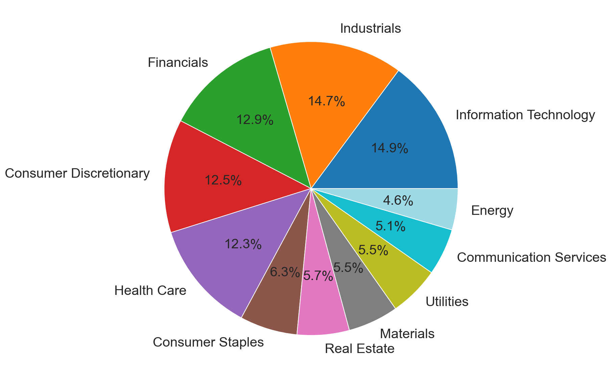
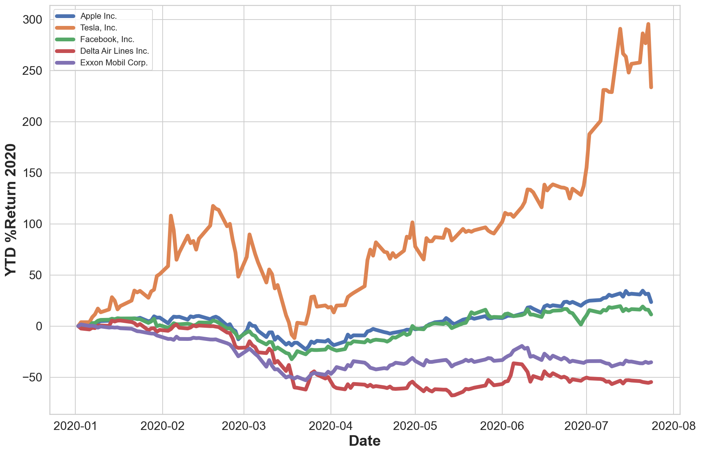

from requests import get
import numpy as np
import pandas as pd
from bs4 import BeautifulSoup
import time as time
from tqdm import tqdm
import yfinance as yf
from IPython.core.display import clear_outputTo extract stock information
To extract stock information we will use yfinance module which is a convenient way to download data from Yahoo Finance. The official API for Yahoo Finance was decommissioned some time back. More details about this module can be found here.
#----- PLOTTING PARAMS ----#
import matplotlib.pyplot as plt
from matplotlib.pyplot import cm
import seaborn as sns
sns.set(style="whitegrid")
sns.color_palette("husl")
%config InlineBackend.figure_format = 'retina'
%config InlineBackend.print_figure_kwargs={'facecolor' : "w"}
plot_params = {
'font.size' : 30,
'axes.titlesize' : 24,
'axes.labelsize' : 20,
'axes.labelweight' : 'bold',
'lines.linewidth' : 3,
'lines.markersize' : 10,
'xtick.labelsize' : 16,
'ytick.labelsize' : 16,
}
plt.rcParams.update(plot_params)1. Generate list of S&P 500 companies
Parse wikipedia to generate a list
wiki_url = 'https://en.wikipedia.org/wiki/List_of_S%26P_500_companies'
response = get(wiki_url)
html_soup = BeautifulSoup(response.text, 'html.parser')
tab = html_soup.find("table",{"class":"wikitable sortable"})column_headings = [entry.text.strip() for entry in tab.findAll('th')]
print(column_headings)['Symbol', 'Security', 'SEC filings', 'GICS Sector', 'GICS Sub-Industry', 'Headquarters Location', 'Date first added', 'CIK', 'Founded']SP_500_dict = {keys:[] for keys in column_headings}for i, name in enumerate(SP_500_dict.keys()):
print(i, name)0 Symbol
1 Security
2 SEC filings
3 GICS Sector
4 GICS Sub-Industry
5 Headquarters Location
6 Date first added
7 CIK
8 FoundedPopulate each row entry as per company data
for row_entry in tab.findAll('tr')[1:]:
row_elements = row_entry.findAll('td')
for key, _elements in zip(SP_500_dict.keys(), row_elements):
SP_500_dict[key].append(_elements.text.strip())SP_500_df = pd.DataFrame(SP_500_dict, columns=SP_500_dict.keys())SP_500_df| Symbol | Security | SEC filings | GICS Sector | GICS Sub-Industry | Headquarters Location | Date first added | CIK | Founded | |
|---|---|---|---|---|---|---|---|---|---|
| 0 | MMM | 3M Company | reports | Industrials | Industrial Conglomerates | St. Paul, Minnesota | 1976-08-09 | 0000066740 | 1902 |
| 1 | ABT | Abbott Laboratories | reports | Health Care | Health Care Equipment | North Chicago, Illinois | 1964-03-31 | 0000001800 | 1888 |
| 2 | ABBV | AbbVie Inc. | reports | Health Care | Pharmaceuticals | North Chicago, Illinois | 2012-12-31 | 0001551152 | 2013 (1888) |
| 3 | ABMD | Abiomed | reports | Health Care | Health Care Equipment | Danvers, Massachusetts | 2018-05-31 | 0000815094 | 1981 |
| 4 | ACN | Accenture | reports | Information Technology | IT Consulting & Other Services | Dublin, Ireland | 2011-07-06 | 0001467373 | 1989 |
| ... | ... | ... | ... | ... | ... | ... | ... | ... | ... |
| 500 | YUM | Yum! Brands Inc | reports | Consumer Discretionary | Restaurants | Louisville, Kentucky | 1997-10-06 | 0001041061 | 1997 |
| 501 | ZBRA | Zebra Technologies | reports | Information Technology | Electronic Equipment & Instruments | Lincolnshire, Illinois | 2019-12-23 | 0000877212 | 1969 |
| 502 | ZBH | Zimmer Biomet | reports | Health Care | Health Care Equipment | Warsaw, Indiana | 2001-08-07 | 0001136869 | 1927 |
| 503 | ZION | Zions Bancorp | reports | Financials | Regional Banks | Salt Lake City, Utah | 2001-06-22 | 0000109380 | 1873 |
| 504 | ZTS | Zoetis | reports | Health Care | Pharmaceuticals | Parsippany, New Jersey | 2013-06-21 | 0001555280 | 1952 |
505 rows × 9 columns
SP_500_df['GICS Sector'].value_counts()Information Technology 75
Industrials 74
Financials 65
Consumer Discretionary 63
Health Care 62
Consumer Staples 32
Real Estate 29
Materials 28
Utilities 28
Communication Services 26
Energy 23
Name: GICS Sector, dtype: int64Visualize distribution of the companies as per sectors
fig, ax = plt.subplots(1,1, figsize=(10,10))
SP_500_df['GICS Sector'].value_counts().plot.pie(y='GICS Sector', autopct='%1.1f%%', fontsize=20, ax = ax, colormap='tab20')
plt.axis('off')
SP_500_df.loc[ SP_500_df['GICS Sector'] == 'Energy']| Symbol | Security | SEC filings | GICS Sector | GICS Sub-Industry | Headquarters Location | Date first added | CIK | Founded | |
|---|---|---|---|---|---|---|---|---|---|
| 44 | APA | APA Corporation | reports | Energy | Oil & Gas Exploration & Production | Houston, Texas | 1997-07-28 | 0000006769 | 1954 |
| 59 | BKR | Baker Hughes Co | reports | Energy | Oil & Gas Equipment & Services | Houston, Texas | 2017-07-07 | 0001701605 | 2017 |
| 80 | COG | Cabot Oil & Gas | reports | Energy | Oil & Gas Exploration & Production | Houston, Texas | 2008-06-23 | 0000858470 | 1989 |
| 101 | CVX | Chevron Corp. | reports | Energy | Integrated Oil & Gas | San Ramon, California | 1957-03-04 | 0000093410 | 1879 |
| 121 | COP | ConocoPhillips | reports | Energy | Oil & Gas Exploration & Production | Houston, Texas | 1957-03-04 | 0001163165 | 2002 |
| 140 | DVN | Devon Energy | reports | Energy | Oil & Gas Exploration & Production | Oklahoma City, Oklahoma | 2000-08-30 | 0001090012 | 1971 |
| 142 | FANG | Diamondback Energy | reports | Energy | Oil & Gas Exploration & Production | Midland, Texas | 2018-12-03 | 0001539838 | 2007 |
| 169 | EOG | EOG Resources | reports | Energy | Oil & Gas Exploration & Production | Houston, Texas | 2000-11-02 | 0000821189 | 1999 |
| 183 | XOM | Exxon Mobil Corp. | reports | Energy | Integrated Oil & Gas | Irving, Texas | 1957-03-04 | 0000034088 | 1999 |
| 219 | HAL | Halliburton Co. | reports | Energy | Oil & Gas Equipment & Services | Houston, Texas | 1957-03-04 | 0000045012 | 1919 |
| 227 | HES | Hess Corporation | reports | Energy | Integrated Oil & Gas | New York, New York | 1984-05-31 | 0000004447 | 1919 |
| 230 | HFC | HollyFrontier Corp | reports | Energy | Oil & Gas Refining & Marketing | Dallas, Texas | 2018-06-18 | 0000048039 | 1947 |
| 274 | KMI | Kinder Morgan | reports | Energy | Oil & Gas Storage & Transportation | Houston, Texas | 2012-05-25 | 0001506307 | 1997 |
| 298 | MRO | Marathon Oil Corp. | reports | Energy | Oil & Gas Exploration & Production | Houston, Texas | 1991-05-01 | 0000101778 | 1887 |
| 299 | MPC | Marathon Petroleum | reports | Energy | Oil & Gas Refining & Marketing | Findlay, Ohio | 2011-07-01 | 0001510295 | 2009 (1887) |
| 345 | NOV | NOV Inc. | reports | Energy | Oil & Gas Equipment & Services | Houston, Texas | 2005-03-14 | 0001021860 | 1841 |
| 352 | OXY | Occidental Petroleum | reports | Energy | Oil & Gas Exploration & Production | Houston, Texas | 1982-12-31 | 0000797468 | 1920 |
| 355 | OKE | Oneok | reports | Energy | Oil & Gas Storage & Transportation | Tulsa, Oklahoma | 2010-03-15 | 0001039684 | 1906 |
| 372 | PSX | Phillips 66 | reports | Energy | Oil & Gas Refining & Marketing | Houston, Texas | 2012-05-01 | 0001534701 | 2012 (1917) |
| 374 | PXD | Pioneer Natural Resources | reports | Energy | Oil & Gas Exploration & Production | Irving, Texas | 2008-09-24 | 0001038357 | 1997 |
| 411 | SLB | Schlumberger Ltd. | reports | Energy | Oil & Gas Equipment & Services | Curaçao, Kingdom of the Netherlands | 1965-03-31 | 0000087347 | 1926 |
| 466 | VLO | Valero Energy | reports | Energy | Oil & Gas Refining & Marketing | San Antonio, Texas | 0001035002 | 1980 | |
| 494 | WMB | Williams Companies | reports | Energy | Oil & Gas Storage & Transportation | Tulsa, Oklahoma | 1975-03-31 | 0000107263 | 1908 |
We can parse these tables and search companies based on the sector
SP_500_df.loc[ SP_500_df['GICS Sector'] == 'Information Technology']| Symbol | Security | SEC filings | GICS Sector | GICS Sub-Industry | Headquarters Location | Date first added | CIK | Founded | |
|---|---|---|---|---|---|---|---|---|---|
| 4 | ACN | Accenture | reports | Information Technology | IT Consulting & Other Services | Dublin, Ireland | 2011-07-06 | 0001467373 | 1989 |
| 6 | ADBE | Adobe Inc. | reports | Information Technology | Application Software | San Jose, California | 1997-05-05 | 0000796343 | 1982 |
| 7 | AMD | Advanced Micro Devices | reports | Information Technology | Semiconductors | Santa Clara, California | 2017-03-20 | 0000002488 | 1969 |
| 13 | AKAM | Akamai Technologies | reports | Information Technology | Internet Services & Infrastructure | Cambridge, Massachusetts | 2007-07-12 | 0001086222 | 1998 |
| 38 | APH | Amphenol Corp | reports | Information Technology | Electronic Components | Wallingford, Connecticut | 2008-09-30 | 0000820313 | 1932 |
| ... | ... | ... | ... | ... | ... | ... | ... | ... | ... |
| 475 | V | Visa Inc. | reports | Information Technology | Data Processing & Outsourced Services | San Francisco, California | 2009-12-21 | 0001403161 | 1958 |
| 489 | WDC | Western Digital | reports | Information Technology | Technology Hardware, Storage & Peripherals | San Jose, California | 2009-07-01 | 0000106040 | 1970 |
| 490 | WU | Western Union Co | reports | Information Technology | Data Processing & Outsourced Services | Englewood, Colorado | 2006-09-29 | 0001365135 | 1851 |
| 498 | XLNX | Xilinx | reports | Information Technology | Semiconductors | San Jose, California | 1999-11-08 | 0000743988 | 1984 |
| 501 | ZBRA | Zebra Technologies | reports | Information Technology | Electronic Equipment & Instruments | Lincolnshire, Illinois | 2019-12-23 | 0000877212 | 1969 |
75 rows × 9 columns
Final plot for returns
fig, ax = plt.subplots(1,1,figsize=(15,10))
for i, tickr in enumerate(tickr_list):
ax.plot(ytd_stat['Date'], ytd_stat[tickr], linewidth=5.0, label=company_name[i])
ax.set_ylabel('YTD %Return 2020')
ax.set_xlabel('Date')
ax.legend()